바꾸는 흐름 · A 지금 모양 그대로 프로필 교환 요청으로 예시 · 셋 다 같아요
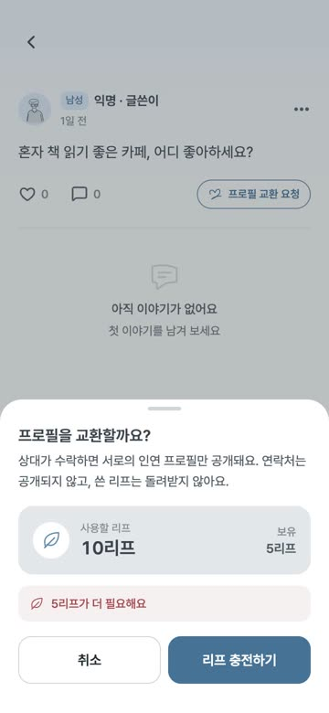
① 모자랄 때지금과 같아요 · "리프 충전하기"
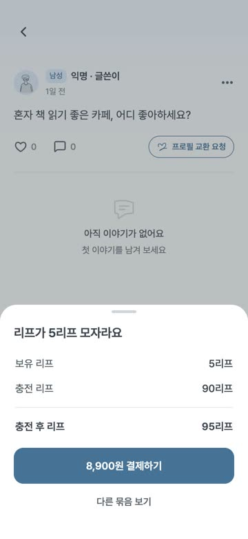
② 충전 시트누르면 그 자리에서 시트가 바뀌어요. 편지 쓰기 때와 같은 "리프가 5리프 모자라요 · 8,900원 결제하기"
③ 돌아오기결제하면 원래 시트로 돌아와요. 보유 95리프, 버튼이 "요청하기"로
리프 충전 화면으로 넘어가지 않아요. "다른 묶음 보기"를 누를 때만 충전 화면으로 가요.
바꾸는 흐름 · B 표 모양으로 맞추기 충전 시트와 같은 이름–값 표
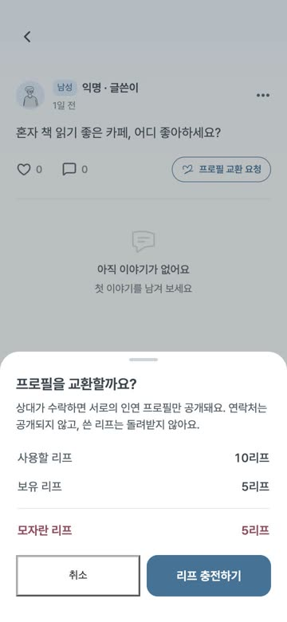
① 모자랄 때회색 카드 · 빨간 줄 대신 표: 사용할 10 · 보유 5 → 구분선 아래 "모자란 리프 5리프"(장미색)
② 충전 시트A와 같아요
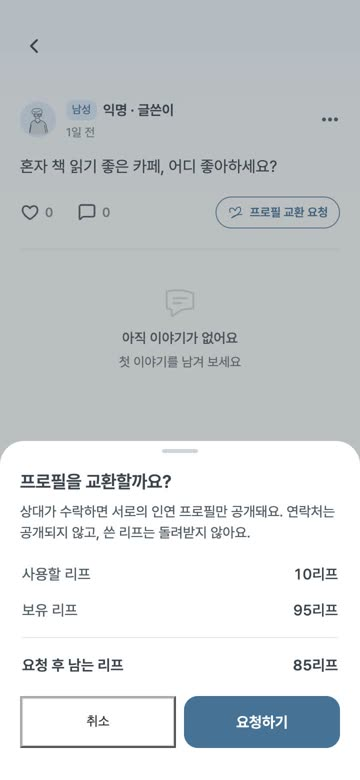
③ 돌아오기보유 95 → "요청 후 남는 리프 85리프"(굵게) · 요청하기
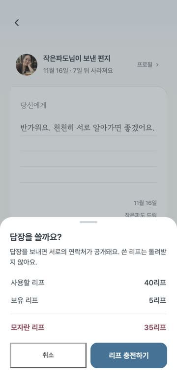
B답장 쓰기 · 모자랄 때
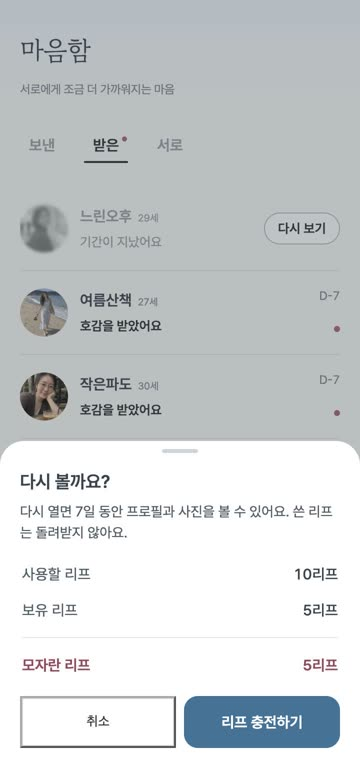
B인연 다시 보기 · 모자랄 때
B는 리프를 쓰는 시트와 채우는 시트가 같은 모양이 돼요. 대신 넉넉할 때 모습도 같이 바뀌어요(사용할 · 보유 · 쓴 뒤 남는 리프).
지금 세 시트 · 어디서 나오나
1 · 답장 쓰기 편지함 → 받은 편지 · 40리프
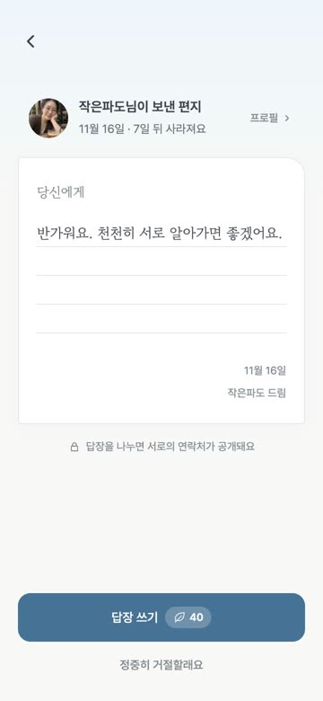
들어가는 곳받은 편지 아래 "답장 쓰기 · 40" (무료 답장 편지가 아닐 때)
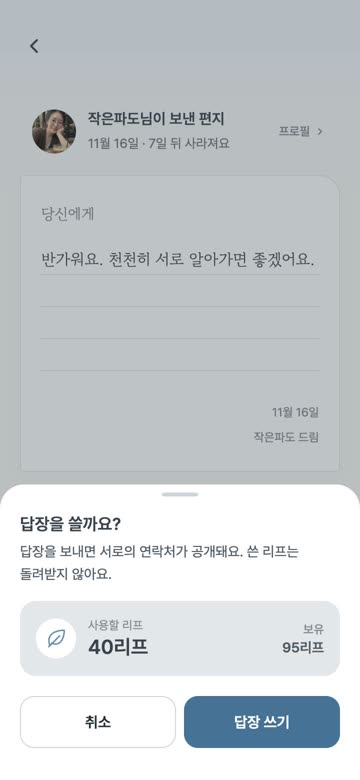
넉넉할 때"답장을 쓸까요?" · 취소 · 답장 쓰기
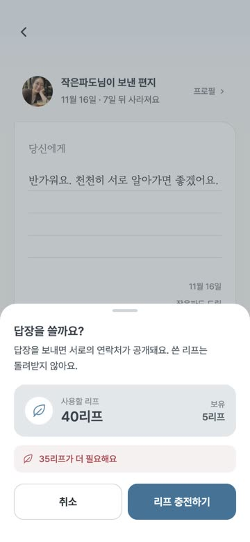
모자랄 때"35리프가 더 필요해요" · 리프 충전하기
2 · 인연 다시 보기 마음함 → 받은 · 7일 지난 인연 · 10리프
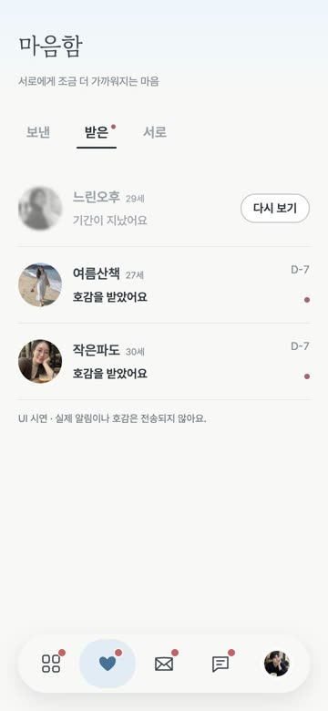
들어가는 곳받은 호감 중 7일이 지나 가려진 줄의 "다시 보기"
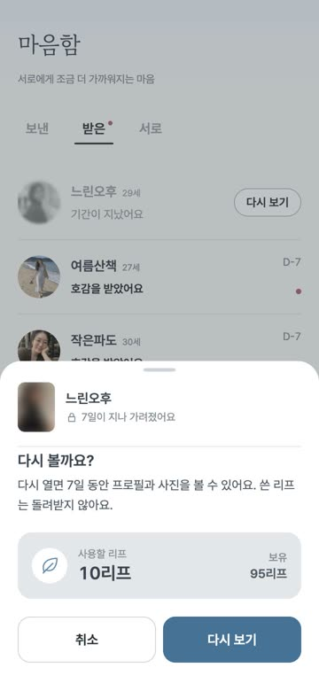
넉넉할 때"다시 볼까요?" · 취소 · 다시 보기
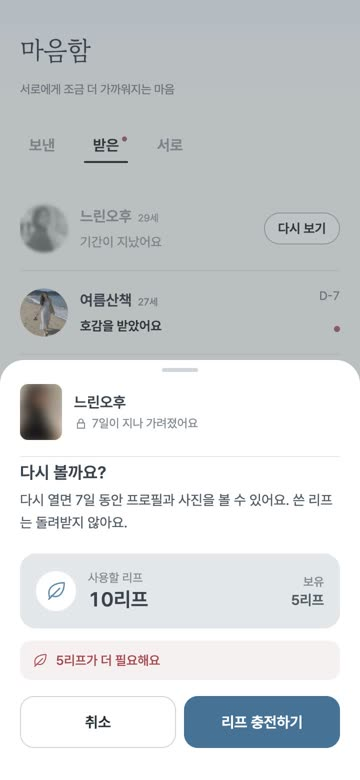
모자랄 때"5리프가 더 필요해요" · 리프 충전하기
3 · 프로필 교환 요청 익명 이야기 → 글 상세 · 10리프
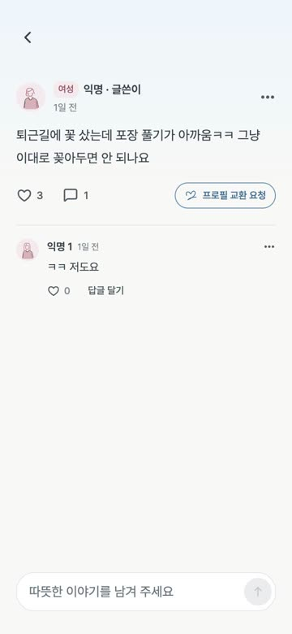
들어가는 곳남의 글 상세 오른쪽 "프로필 교환 요청"
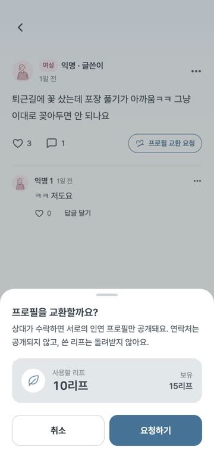
넉넉할 때"프로필을 교환할까요?" · 취소 · 요청하기
모자랄 때"5리프가 더 필요해요" · 리프 충전하기